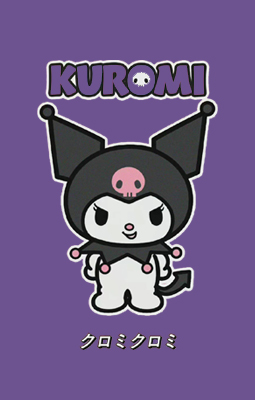

作者简介

- 《奇幻魔法melody 》，是一部以Sanrio旗下的My Melody玩偶作基础的日本动画，由 Comet工作室制作。
- 《奇幻魔法melody 》原作者是福岛一芳、Sanrio。
- 创办人认为人类文明都是从河流开始发源，例如底格里斯河、尼罗河与黄河，孕育出世界上三个最古老文明，西班牙文中｢San｣是神圣之意， ｢Rio ｣意指河流，创办人以神圣的河流为名，表达对人类文明的敬意
- 《奇幻魔法Melody》（日文原名：おねがいマイメロディ）第一辑是于2005年4月3日至2006年3月26日逢星期日早上9:30-10:00在东京电视台系放映，共52集，另外也有在Animax播放。第一辑播放结束后，第二辑的《奇幻魔法Melody》也开始播放，现时日本将开始播放第四辑，不过第4辑会将故事舞台转换，并换上新人物，取代第1～3辑的人类角色。
剧情回顾